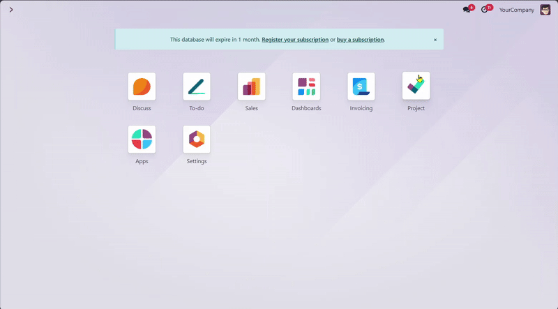
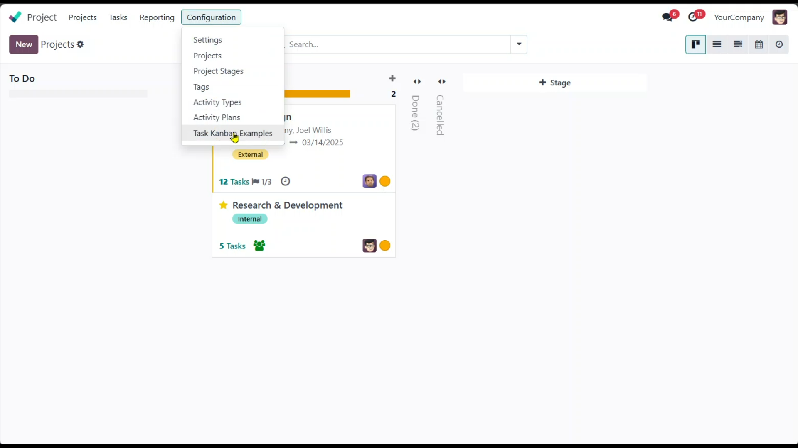
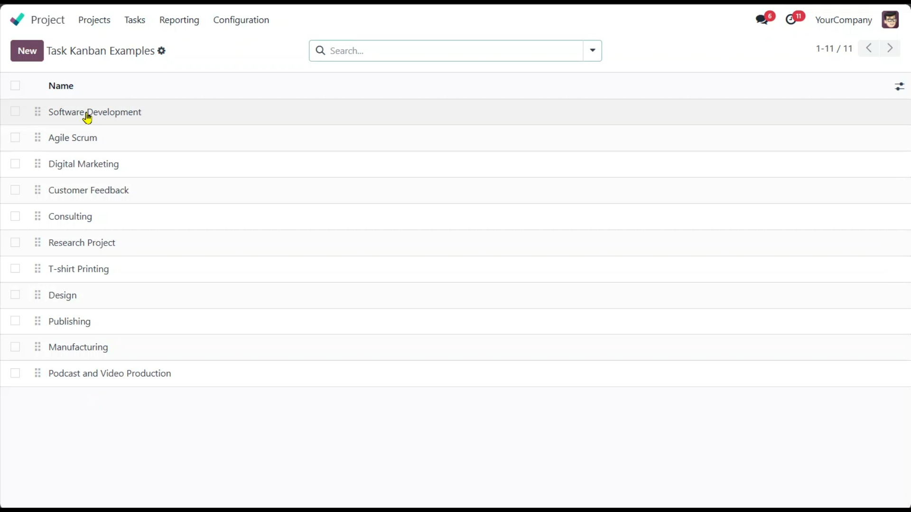
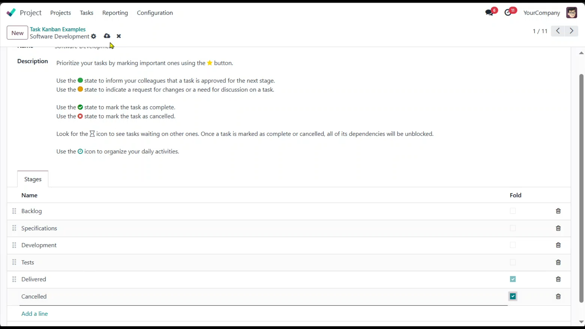
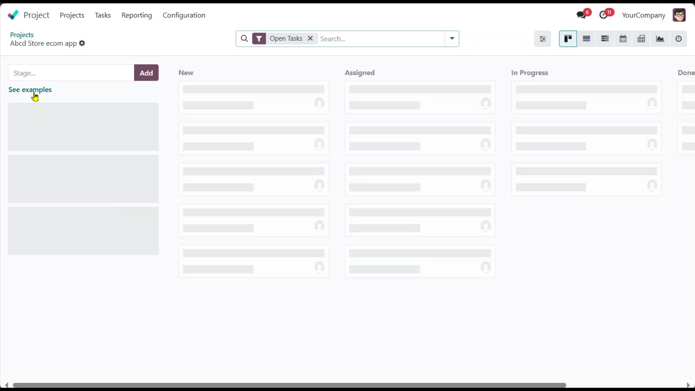
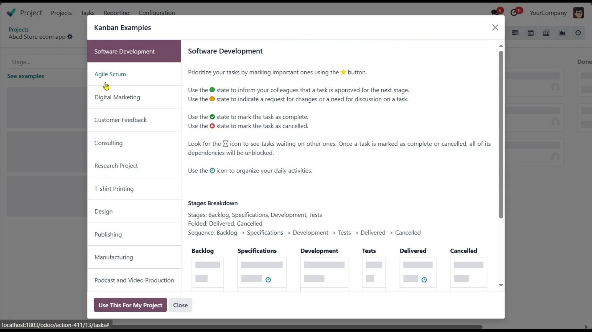
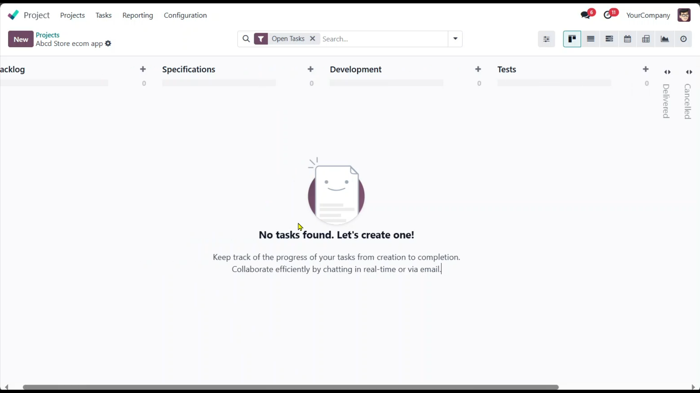
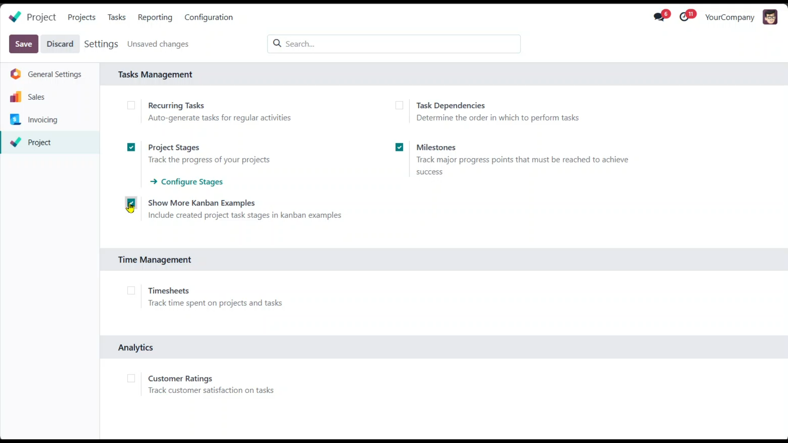
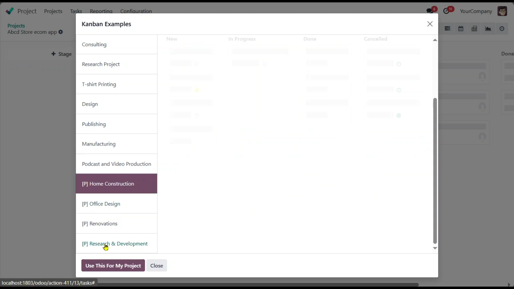

It is designed to enhance project management in Odoo by providing users with the ability to create and utilize custom Kanban boards. This module allows users to design their own Kanban examples tailored to their specific project needs and seamlessly integrate them with existing Kanban boards from other projects.






You can allow user to use stages from created project by following settings

